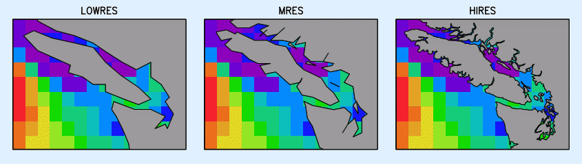
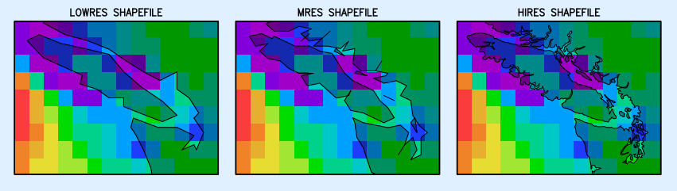

This is documentation for basemap.gs, a GrADS script that overlays a land or ocean mask that exactly matches the coastal outlines of the three GrADS map files: lowres, mres, and hires. Basemap works by overlaying polygons on top of an existing display; once they are all drawn, the polygons appear as a solid region that covers the land or ocean areas. Basemap does not actually mask the data, it only masks the display of the data.
basemap.gs L(and)/O(cean) <fill_color> <outline_color> <L(owres)/M(res)/H(ires)>
The land and ocean masks are composed of hundreds of
polygons that are specified in accompanying ASCII files. The ASCII files must be downloaded from the GrADS script library. Once you have downloaded these files and stored them in a convenient location, you must update your copy of basemap.gs to include the path of the location of these files. The script will not work without these files.
ftp://cola.gmu.edu/grads/scripts/lpoly_lowres.asc
ftp://cola.gmu.edu/grads/scripts/lpoly_mres.asc
ftp://cola.gmu.edu/grads/scripts/lpoly_hires.asc
ftp://cola.gmu.edu/grads/scripts/opoly_lowres.asc
ftp://cola.gmu.edu/grads/scripts/opoly_mres.asc
ftp://cola.gmu.edu/grads/scripts/opoly_hires.asc
GrADS version 2.1+ has the capability to add a transparency level to any defined color. This feature is especially complementary to basemap's capabilities because the land/ocean areas can be subtly identified without completely covering up the displayed data underneath the mask. Unfortunately, the polygons in the basemap database were not created with transparency in mind, and many of them overlap. Overlapping semi-transparent polygons will appear darker in the areas where the overlap occurs because the alpha channel value is being applied twice to the same set of pixels. This spoils the desired effect of the semi-transparent land/ocean mask.
To avoid this, you can plot a transparent color value using a color mask. How this operates "under the hood" is somewhat like double buffering. When the masked color number is encountered, a mask is set up, the same size of the screen image. While that color number is being plotted, the plotting is done to the mask image instead. The mask image can be thought of as simply zeros and ones -- 0 indicating that the color has not been drawn there, 1 that it has. When the drawing action is terminated, at the conclusion of a 'draw' or 'display' command or when another color number is being used, then the "masked" color is drawn to the main plot using a masked paint operation, where the color is painted to the plot everywhere where the mask image was 1. To set a color to be masked, simply specify its alpha channel value as negative. The positive of that value will be used to draw the actual color, when rendered via the mask.
There is a further complication with transparent color masking and basemap. The basemap script is basically a repetition of many 'draw polyf' commands, so the color masking doesn't work the way it should because the color mask is flushed at the conclusion of each 'draw' command instead of at the conclusion of the basemap script itself. The solution was to convert the polygon data into shapefiles. All the polygons in a shapefile are rendered with a single 'draw shp' command, so the transparent color masking works properly. See Example #4 below for how to draw a semi-transparent mask over land areas. The links for downloading the required shapefiles are given below. Note that a shapefile is actually a set of four files, so for each class of shapefile there is a link to a zipped tarball that contains all the required files (.shp, .shx, .dbf, and .prj).
ftp://cola.gmu.edu/grads/scripts/grads_lowres_land.tar.gz
ftp://cola.gmu.edu/grads/scripts/grads_lowres_ocean.tar.gz
ftp://cola.gmu.edu/grads/scripts/grads_mres_land.tar.gz
ftp://cola.gmu.edu/grads/scripts/grads_mres_ocean.tar.gz
ftp://cola.gmu.edu/grads/scripts/grads_hires_land.tar.gz
ftp://cola.gmu.edu/grads/scripts/grads_hires_ocean.tar.gz
The bottom line is that basemap script will not work with transparent colors -- you must use the custom shapefiles instead. It is important to note that the shapefiles that were created based on the basemap polygon data do not conform to the official ESRI Shapefile Technical Specification. They will display properly when used with GrADS, but do not use these custom shapefiles for any other purpose or with any other shapefile-handling tool.
set lat 46.8 51.2 set lon -128.5 -121.75 set gxout grfill set xlab off set ylab off
set vpage 0 3.6 4 8.5 set mpdset lowres set poli on d u10m basemap O 15 1 L draw title LOWRES
set vpage 3.4 7.0 4 8.5 set mpdset mres set poli off d u10m basemap O 15 1 M draw title MRES
set vpage 6.8 10.4 4 8.5 set mpdset hires set poli off d u10m basemap O 15 1 H draw title HIRES

set mproj nps set lon -180 180 set lat 0 90 set mpvals -180 180 60 90 display sst basemap L
basemap o 0 0 (<- that's oh zero zero) ;* mask out ocean basemap L 0 0 ;* mask out non-US landThis will only work properly if your domain is within the boundaries 20N-50N, 130W-60W. Low-res maps only. Here is an example of how this can look:
'set rgb 16 1 1 1 -80'
'set map 0 1 3'
'set line 16' 'set shpopts 16' 'set vpage 0 3.6 0 4' 'set mpdset lowres' 'd u10m' 'draw shp grads_lowres_land'
'draw title LOWRES SHAPEFILE' 'set vpage 3.4 7.0 0 4' 'set mpdset mres' 'set poli off' 'd u10m' 'draw shp grads_mres_land'
'draw title MRES SHAPEFILE' 'set vpage 6.8 10.4 0 4' 'set mpdset hires' 'd u10m' 'draw shp grads_hires_land'
'draw title HIRES SHAPEFILE'